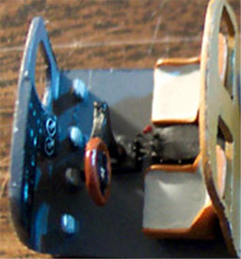

|

Czech Master Resin 1/72 Sikorsky S-38
Images, model and text copyright © 2003 by Matt Swan
Martin Johnson and his wife Osa made the Sikorsky S-38 famous during his exploration of the Dark Continent. He and his wife used an S-38 and an S-39 as their primary means of exploring the inner areas of Africa. And you cannot cover the subject of commercial seaplanes in Hawaii without noting the rugged S-38. It was often referred to as an "Air Yacht" it was stylish and luxurious and had wheels making it a true amphibian seaplane.
It was used by filmmakers and adventurers as well as by Pan American Airways and Hawaii's Inter-Island Airways. It was coveted by individuals with the resources to experience this kind of adventure and by small business as well like the S.C. Johnson Company and their colorful aircraft, the "Carnauba".
Powered by twin Pratt and Whitney 450 horsepower radial Wasp engines, the S-38 could reach 110 miles per hour with a range of 600 miles. In a passenger craft configuration it could seat 8 passengers plus the pilot and co-pilot.
Although the original "Carnauba" is long gone the Johnson family has had the aircraft accurately reproduced and this is the inspiration for my modeling project. Interior accommodations varied greatly from aircraft to aircraft dependent on the whims of the owner and the interior of the "Carnauba" is no exception, actually, it is exceptional! Inside this air yacht we find a small china buffet and an overstuffed sofa to seat three. There are two plush chairs and exquisite woodwork throughout the craft. This is the aircraft that I will be modeling.
I like Sikorsky aircraft so much, and this model in particular, that I had to purchase two copies of the kit. One, purchased from an internet model distributor, arrived in a plastic bag while the other, purchased from the Martin and Osa Johnson Safari Museum , arrived in a white light duty cardboard box. Czech Master made an initial production run of 200 kits which was the original intent, however, the kit was so popular and sold out of the distributors so fast that they re-mastered the molds and made a second 200 unit run in mid 2003. I also purchased two models because the decals are so cool that, like a Lays potato chip, I couldn't do just one.
Upon opening the bag two things stood out right away; the massive single piece main wing which appears to be cast nice and straight. The second item is dual sets of fuselage pieces. The Carnauba has a slightly different window arraignment from the other versions of the S-38 and Czech Masters included both versions for us. There are also two different sets of engines for different versions. Oddly though, with the inclusion of all these variations to build the Carnauba there were no interior details for this craft, only commercial passenger details are included. There are plenty of small struts, hinges and detail pieces and the upper access door is included as a separate piece.
There is a very nice set of decals included with the kit. There are decals for five different aircraft; the Carnauba, Osa Johnson's Arc, a U.S. Navy transport plane, a Pan American Airways plane and one set for a NYRBA Line. What's that you ask? That's the New York to Rio and Buenos Aires Line. There is also a second small sheet with an instrument panel decal. There are several full color sheets of pictures for the Carnauba included with the kit that cover the interior and the exterior and some very comprehensive instruction sheets. Although the wheels are very nice in their overall quality I wanted to improve the look of the model in this area and ordered a set of Tom's Model Works wire wheels for WWI aircraft from Rosemont Hobbies.
Construction begins with a marathon clean-up session. All the parts get dipped into hot soapy water then a rinse to remove any casting release agents that may still be present. Each part and tree of parts is placed on a paper towel to air dry. Care must be taken as there are several very fine details and you do not want to be hunting for them at the bottom of a sink full of hot soapy water. After they had dried the second stage of clean-up began. All the flash has to be removed from the parts and the casting blocks had to be removed from the interior parts and floor pan.
I went over the body shell and the wings filling pinholes with superglue followed by some accelerator. There were maybe fifteen or twenty pinholes to be filled and each was sanded smooth before the superglue could become too hard. Parts for each engine assembly was cleaned up and placed in a small container for later painting and assembly.
This is my first experience with a complete resin kit of this scale. What I mean by that is with hollow fuselage pieces and all the fiddly little satellite pieces like struts and such. I have done two old Planet Models resin kits but they were very basic in construction consisting of five or six main pieces and maybe some landing gear. Sure, I've done plenty of resin aftermarket accessory kits like cockpits and landing gear bay but this - it's kind of strange to not have some polystyrene to attach all this stuff to. I have heard of many modelers using wet sanding to clean up resin parts but this process has never worked well for me. I think the biggest advantage to wet sanding is that it keeps the dust down and this is important, as the dust is toxic. To deal with this I use a dust respirator, not a dust mask - there is a difference. A respirator has at least two straps that hold it to your face ensuring a secure fit while a mask has only one and tends to leave many openings around the edges where contaminants can sneak in. A respirator will usually have a baffle style valve in it to ease exhaling. With this said, back to the model. I am using an Xacto razor saw to remove the casting blocks that are easily accessible and for those other pieces I'm using my Dremel with a cutting wheel attached - this unit does generate a lot of dust so I've set up a work area in the basement for this process. Final touch ups are done with a fresh #11 Xacto blade or with a diamond file and automotive emery cloth.
On the kit I'm working on there is some severe warpage to the interior bulkhead that is molded onto the floor pan. It appears that this is a result of packaging and not from the casting process. I hold the piece under hot tap water and gently move it back into the correct position and then place it into some cold water while holding it in place. This had to be repeated three or four times until the part was back to it's intended shape. As I said earlier, there are no interior parts provided for the Carnauba so some scratch building is required right away. I use some rectangular stock polystyrene Evergreen pieces to make the sofa, cutting cushion joints with the edge of a diamond file and more Evergreen stock for the buffet. Two of the kit chairs are used also. While studying the pictures provided by Czech Master and the shots that came from Johnson Wax several things come to mind. First, this is 1/72 so just how much of the interior are you going to be able to see through the windows. Second, the Carnauba had curtains along both sides which will have to be recreated from scratch and will further hamper the interior view.
 These two points take me to the wood paneling inside; I've seen some really impressive recreations of wood grain from some WWI modelers but this is not easy stuff to do and once done on the interior the chances of ever being able to make it out are slim so I decided to simply paint the interior wood areas and the individual seats with Testors flat tan and not worry about it. I used Gunze-Sangyo RLM 66 for the floor and upper wall areas. The sofa and seat cushions were done in a very light gray and the buffet was done with Testors rust.
I was not happy with the looks of the decal that was provided for the dash so I painted the dash instrument areas white, cut the decal up and used some parts of it to overlay the white and used some Reheat Instrument faces in a couple other places. Other exposed areas were touched up with Testors flat black enamel. The photographs clearly show a console between the front seats with throttles and other controls but this part does not exist in the kit. More Evergreen Styrene; I layered two pieces of styrene together then sanded it to shape for the basic console and used some leftover brass bits to make the instrument levers.
After the interior had been completed and the interior hull paint had dried I began the lengthy process of dry-fitting the floor pan into the hull. First impression was that it would fit well but there was a small gap along the top of the fuselage that told a different story. The bulkhead behind the pilot's seat and the dash were impacting on the hull. Applying pressure to close the hull simply caused all the interior pieces to bulge. Using a small conical stone on my Dremel I ground the interior of the hull along the impact areas to achieve a good fit. This was done in several sessions taking off just a little each time and then dry-fitting the pieces again. It is always easier to take more off than to have to build the surface back up. Next the interior gray was touched up then masked so I could lay down a coat of Testors Tan for the interior wall woodwork.
Now I am able to move the hull exterior. I decided to paint the primary color patterns with the kit unassembled then touch up the joint areas after assembly. Using a large piece of masking tape the interior was masked in its entirety to prevent any paint from blowing in the windows. First, the exterior got a few coats of Testors Dark Red. After this had dried overnight I applied fine strips of masking tape and shot several coats of thinned Testors Gloss Black. After the masks were removed I could see a few areas that needed touch up. I'm not real concerned about the lower edge where the red and black meet as I will be using Pactra yellow Trim Tape to create the yellow pin stripping. Most of this pin stripping will be applied after the final hull assembly.
The enamels have had a few days to harden up and work is proceeding. The interior is secured first with just a few key spots of superglue placed with a dental pick while the hull is closed up to hold the floor pan in the correct position then the hull is opened back up and a more substantial bead of glue is put in place. The opposite side gets a bead of glue placed on it and the main seam gets a bead of glue and the hull goes together. Always in the past superglue has been my glue of choice when working with resin and for small stuff that has been just fine but now I find that it is not so fine. For some reason on the main seam of the hull the glue wants to harden almost immediately, not giving me any time for positioning. I find this a little strange, as my superglue has almost always given me 30 seconds or so to position parts. I take this as a learning experience and next time will use some five-minute epoxy for joining large main parts. Finally the hull is together and set aside to cure. There is a seam line that will have to be filled but I think I will wait a day or two before tackling that one.
This whole thing with painting and then assembling was a bad idea. Even after waiting several days the paint was still soft enough to take fingerprints with extended handling and that is just what I had to do. Filling the seams was a real pain in the butt. I laid in fine beads of super-glue and hit it with accelerator then filed and sanded. The top seam took several repeats of this and some fine detail was lost. I had to remask and reshoot all the paint. The only smart thing I did was prepainting the yellow window frames before installing the clear parts. After more than a week of doing little bits here and there I finally have gotten the main hull repainted. The next step is to lay down the yellow pin stripping. When I build the second model of this aircraft I will follow a more conservative approach and assemble prior to painting.
 It has been difficult to stay motivated on this model for some reason. For two months now it has sat on the corner of my work desk glaring at me but today I had enough of that and picked the project back up. I'm starting the pin stripping using the Pactra yellow Trim Tape that I mentioned earlier. I cut strips of approximate length and lay them down on the hull, the tackiness is such that I can lift it again to reposition and once it's where I like I can burnish it down with a toothpick. Once the tape is all in place I use some Testors flat yellow to touch up some seams and curve areas. I'm counting on a good coat of Future to really seal this all down in the end.
It has been difficult to stay motivated on this model for some reason. For two months now it has sat on the corner of my work desk glaring at me but today I had enough of that and picked the project back up. I'm starting the pin stripping using the Pactra yellow Trim Tape that I mentioned earlier. I cut strips of approximate length and lay them down on the hull, the tackiness is such that I can lift it again to reposition and once it's where I like I can burnish it down with a toothpick. Once the tape is all in place I use some Testors flat yellow to touch up some seams and curve areas. I'm counting on a good coat of Future to really seal this all down in the end.
I've also taken the main wing and tail booms and have coated them with some Krylon Gloss Black decanted from a rattle can in preparation for a coating of Alclad aluminum lacquer. Decanted you ask? I take a drinking straw and hold it to the spray nozzle of the rattle can with the opposite end in a small collection cup and press the button. The paint is collected - all thinned out already - and transferred to my airbrush where I have much better control that any rattle can could give me.
This is a work in progress, stay tuned for developments.
Page updated 12/14/03
|